대기환경기사 (2017-03-05 기출문제)
1과목: 대기오염 개론
1. 다음 중 주로 연소 시에 배출되는 무색의 기체로 물에 매우 난용성이며, 혈액 중의 헤모글로빈과 결합력이 강해 산소 운반능력을 감소시키는 물질은?
- PAN
- 알데히드
- NO
- HC
(정답률: 85%)

2. 다음은 탄화수소류에 관한 설명이다. ( )안에 가장 적합한 물질은?
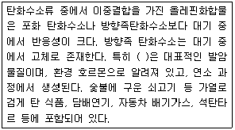
- 벤조피렌
- 나프탈렌
- 안트라센
- 톨루엔
(정답률: 83%)
3. 다음 오염물질 중 히드록시기를 포함하고 있는 물질은?
- 니켈 카-보닐
- 벤젠
- 메틸 멜캅탄
- 페놀
(정답률: 72%)
4. 다음은 입자상 물질의 측정장치 중 중량농도 측정방법에 관한 설명이다. ( )안에 가장 적합한 것은?
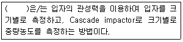
- 여지포집법
- Piezobalance
- 다단식 충돌판 측정법
- 정전식 분급법
(정답률: 81%)
5. CO에 대한 설명으로 옳지 않은 것은?
- 자연적 발생원에는 화산폭발, 테르펜류의 산화, 클로로필의 분해, 산불 및 해수 중 미생물의 작용 등이 있다.
- 지구위도별 분포로 보면 적도 부근에서 최대치를 보이고, 북위 30도 부근에서 최소치를 나타낸다.
- 물에 난용성이므로 수용성 가스와는 달리 비에 의한 영향을 거의 받지 않는 다.
- 다른 물질에 흡착현상도 거의 나타나지 않는다.
(정답률: 70%)
6. 다음 광화학적 산화제와 2차 대기오염물질에 관한 설명 중 가장 거리가 먼 것은?
- PAN은 peroxyacetyl nitrate의 약자이며, CH3COOONO2의 분자식을 갖는다.
- PAN은 PBN(peroxybenzoyl nitrate)보다 100배 이상 눈에 강한 통증을 주며, 빛을 흡수시키므로 가시거리를 감소시킨다.
- 오존은 섬모운동의 기능장애를 일으키며, 염색체 이상이나 적혈구의 노화를 초래하기도 한다.
- 광화학반응의 주요 생성물은 PAN, CO2, 케톤 등이 있다.
(정답률: 76%)
7. 냄새에 관한 다음 설명 중 ( )안에 가장 알맞은 것은?
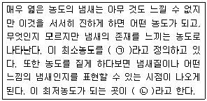
- ㉠ 최소감지농도(Detection threshold), ㉡ 최소포착농도(Capture threshold)
- ㉠ 최소인지농도(Detection threshold), ㉡ 최소자각농도(Recognition threshold)
- ㉠ 최소인지농도(Recognition threshold), ㉡ 최소포착농도(Capture threshold)
- ㉠ 최소감지농도(Recognition threshold), ㉡ 최소인지농도(Awareness threshold)
(정답률: 81%)
8. 굴뚝에서 배출되는 연기모양 중 원추형에 관한 설명으로 가장 적합한 것은?
- 수직온도경사가 과단열적이고, 난류가 심할 때 주로 발생한다.
- 지표역전이 파괴되면서 발생하며 30분 이상은 지속하지 않는 경향이 있다.
- 연기의 상하부분 모두 역전인 경우 발생한다.
- 구름이 많이 낀 날에 주로 관찰된다.
(정답률: 63%)
9. 다음은 최대혼합고(MMD)에 관한 설명이다. ( )안에 가장 알맞은 것은?
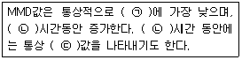
- ㉠ 밤, ㉡ 낮, ㉢ 20 - 30km
- ㉠ 밤, ㉡ 낮, ㉢ 2000 - 3000m
- ㉠ 낮, ㉡ 밤, ㉢ 20 - 30km
- ㉠ 낮, ㉡ 밤, ㉢ 2000 - 3000m
(정답률: 72%)
10. 마찰층(fricition lawer)과 관련된 바람에 관한 설명으로 거리가 먼 것은?
- 마찰층 내의 바람은 높이에 따라 항상 반시계방향으로 각천이(angular shift)가 생긴다.
- 마찰층 내의 바람은 위로 올라갈수록 실제 풍향은 서서히 지균풍에 가까워진다.
- 마찰층 내의 바람은 위로 올라갈수록 그 변화량이 감소한다.
- 마찰층 이상 고도에서 바람의 고도변화는 근본적으로 기온분포에 의존한다.
(정답률: 66%)
11. 열섬효과에 관한 설명으로 옳지 않은 것은?
- 도시에서는 인구와 산업의 밀집지대로서 인공적인 열이 시골에 비하여 월등하게 많이 공급된다.
- 열섬현상은 고기압의 영향으로 하늘이 맑고 바람이 약한 때에 잘 발생한다.
- 도시의 지표면은 시골보다 열용량이 적고 열전도율이 높아 열섬효과의 원인이 된다.
- 열섬효과로 도시주위의 시골에서 도시로 바람이 부는데 이를 전원풍이라 한다.
(정답률: 81%)
12. 입자상물질의 농도가 250㎍/m3이고, 상대습도가 70%인 대도시에서 가시 거리는 몇 km인가? (단, 계수 A는 1.3으로 한다.)
- 4.3
- 5.2
- 6.5
- 7.2
(정답률: 75%)
13. 다음은 바람장미에 관한 설명이다. ( )안에 가장 알맞은 것은?
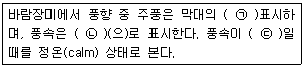
- ㉠ 길이를 가장 길게, ㉡ 막대의 굵기, ㉢ 0.2m/s 이하
- ㉠ 굵기를 가장 굵게, ㉡ 막대의 길이, ㉢ 0.2m/s 이하
- ㉠ 길이를 가장 길게, ㉡ 막대의 굵기, ㉢ 1m/s 이하
- ㉠ 굵기를 가장 굵게, ㉡ 막대의 길이, ㉢ 1m/s 이하
(정답률: 75%)
14. 태양상수를 이용하여 지구표면의 단위면적이 1분 동안에 받는 평균태양에너지를 구한 값은?
- 0.25cal/cm2·min
- 0.5cal/cm2·min
- 1.0cal/cm2·min
- 2.0cal/cm2·min
(정답률: 60%)
15. 다음은 황화합물에 관한 설명이다. ( )안에 가장 알맞은 것은?
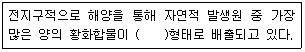
- H2S
- CS2
- DMS[(CH3)2S]
- OCS
(정답률: 73%)
16. 2000m에서 대기압력(최초 기압)이 8⑤mbar, 온도가 5℃, 비열비 K가 1.4일 때 온위(potential temperature)는? (단, 표준압력은 1000mbar)
- 약 284K
- 약 289K
- 약 296K
- 약 324K
(정답률: 64%)
17. 환기를 위한 실내공기오염의 지표가 되는 물질로 가장 적합한 것은?
- SO2
- NO2
- CO
- CO2
(정답률: 80%)
18. Richardson수(R)에 관한 설명으로 옳지 않은 것은?
 로 표시하며, ΔT/ΔZ는 강제대류의 크기, Δu/Δz는 자유대류의 크기를 나타낸다.
로 표시하며, ΔT/ΔZ는 강제대류의 크기, Δu/Δz는 자유대류의 크기를 나타낸다.- R ＞ 0.25 일 때는 수직방향의 혼합이 없다.
- R = 0 일 때는 기계적 난류만 존재한다.
- R 이 큰 음의 값을 가지면 대류가 지배적이어서 바람이 약하게 되어 강한 수직운동이 일어나며, 굴뚝의 연기는 수직 및 수평방향으로 빨리 분산된다.
(정답률: 70%)
19. 다음 중 다이옥신의 광분해에 가장 효과적인 파장범위(nm)는?
- 100~150
- 250~340
- 500~800
- 1200~1500
(정답률: 71%)
20. 역사적 대기오염사건과 주 원인물질을 바르게 짝지은 것은?
- 뮤즈 계곡 사건 - 아황산가스
- 도쿄 요코하마 사건 - 수은
- 런던스모그 사건 - 오존
- 포자리카 사건 - 메틸이소시아네이트
(정답률: 75%)
2과목: 연소공학
21. 가연기체와 공기 혼합기체의 가연한계(vol%)가 가장 넓은 것은?
- 메탄
- 아세틸렌
- 벤젠
- 톨루엔
(정답률: 51%)
22. 연소 배출가스 분석결과 CO2 11.9%, O2 7.1%일 때 과잉공기계수는 약 얼마인가?
- 1.2
- 1.5
- 1.7
- 1.9
(정답률: 56%)
23. 다음 중 기체연료의 일반적인 특징으로 가장 거리가 먼 것은?
- 연소조절, 점화 및 소화가 용이한 편이다.
- 회분이 거의 없이 먼지발생량이 적다.
- 연료의 예열이 쉽고, 저질연료도 고온을 얻을 수 있다.
- 취급 시 위험성이 적고, 설비비가 적게 든다.
(정답률: 79%)
24. 연료의 연소 시 과잉공기의 비율을 높여 생기는 현상으로 가장 거리가 먼 것은?
- 에너지손실이 커진다.
- 연소가스의 희석효과가 높아진다.
- 화염의 크기가 커지고 연소가스 중 불완전 연소물질의 농도가 증가한다.
- 공연비가 커지고 연소온도가 낮아진다.
(정답률: 68%)
25. 기체연료와 공기를 혼합하여 연소할 경우 다음 중 연소속도가 가장 큰 것은? (단, 대기압, 25℃ 기준)
- 메탄
- 수소
- 프로판
- 아세틸렌
(정답률: 61%)
26. 유동층 연소에 관한 설명으로 거리가 먼 것은?
- 부하변동에 따른 적응성이 낮은 편이다.
- 높은 열용량을 갖는 균일 온도의 층내에서는 화염전파는 필요없고, 층의 온도를 유지할 만큼의 발열만 있으면 된다.
- 분탄을 미분쇄 투입하여 석탄 입자의 체류시간을 짧게 유지한다.
- 주방쓰레기, 슬러지 등 수분함량이 높은 폐기물을 층내에서 건조와 연소를 동시에 할 수 있다.
(정답률: 55%)
27. 다음 자동차 배출가스 중 삼원촉매장치가 적용되는 물질과 가장 거리가 먼 것은?
- CO
- SOx
- NOx
- HC
(정답률: 65%)
28. 탄소 87%, 수소 13%의 경유 1kg을 공기비 1.3으로 완전연소 시켰을 때, 실제건조연소가스 중 CO2 농도(%)는?
- 10.1%
- 11.7%
- 12.9%
- 13.8%
(정답률: 51%)
29. 다음 기체연료 중 고위발열량(kcal/Sm3)이 가장 낮은 것은?
- 메탄
- 에탄
- 프로판
- 에틸렌
(정답률: 68%)
30. 부피비율로 프로판 30%, 부탄 70%로 이루어진 혼합가스 1L를 완전연소 시키는데 필요한 이론공기량(L)은?
- 23.1
- 28.8
- 33.1
- 38.8
(정답률: 62%)
31. 클링커 장애(Clinker trouble)가 가장 문제가 되는 연소장치는?
- 화격자 연소장치
- 유동층 연소장치
- 미분탄 연소장치
- 분무식 오일버너
(정답률: 60%)
32. 저위발열량 11,000 kcal/kg인 중유를 완전연소 시키는데 필요한 이론습 연소가스량(Sm3/kg)은? (단, 표준상태 기준, Rosin의 식 적용)
- 약 8.1
- 약 10.2
- 약 12.2
- 약 14.2
(정답률: 42%)
33. 연소실에서 아세틸렌 가스 1kg을 연소시킨다. 이 때 연료의 80%(질량기준)가 완전연소되고, 나머지는 불완전연소 되었을 때 발생되는 열량(Kcal)은? (단, 연소반응식은 아래식에 근거하여 계산)
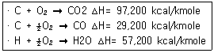
- 39130
- 1⑤30
- 9730
- 8630
(정답률: 36%)
34. 석유계 액체연료의 탄수소비(C/H)에 대한 설명 중 옳지 않은 것은?
- C/H 비가 클수록 이론공연비가 증가한다.
- C/H 비가 클수록 방사율이 크다.
- 중질연료일수록 C/H 비가 크다.
- C/H 비가 클수록 비교적 점성이 높은 연료이며, 매연이 발생되기 쉽다.
(정답률: 47%)
35. 에탄과 부탄의 혼합가스 1Sm3를 완전연소시킨 결과 배기가스 중 탄산가스의 생성량이 3.3Sm3 이었다면 혼합가스 중 에탄과 부탄의 mol비(에탄/부탄)는?
- 2.19
- 1.86
- 0.54
- 0.46
(정답률: 42%)
36. 연료 연소 시 검댕(그을음)의 발생에 관한 설명으로 옳지 않은 것은?
- 연료의 탄소/수소의 비가 작을수록 검댕이 발생하기 쉽다.
- 탄소-탄소간의 결합이 절단되기보다 탈수소가 쉬운 연료일수록 검댕이 쉽게 발생한다.
- 분해, 산화하기 쉬운 탄화수소 연료일수록 검댕 발생이 적다.
- 천연가스 ＜ LPG ＜ 코크스 ＜ 아탄 ＜ 중유 순으로 검댕이 많이 발생한다.
(정답률: 63%)
37. C: 78%, H: 22%로 구성되어 있는 액체연료 1kg을 공기비 1.2로 연소 하는 경우에 C의 1%가 검댕으로 발생된다고 하면 건연소가스 1Sm3 중의 검댕의 농도(g/Sm3)는 약 얼마인가?
- 0.55
- 0.75
- 0.95
- 1.⑤
(정답률: 40%)
38. 다음 중 건타입(Gun type) 버너에 관한 설명으로 틀린 것은?
- 형식은 유압식과 공기분무식을 합한 것이다.
- 유압은 보통 7 kg/cm2 이상이다.
- 연소가 양호하고, 전자동 연소가 가능하다.
- 유량조절 범위가 넓어 대용량에 적합하다.
(정답률: 73%)
39. 액화석유가스에 관한 설명으로 옳지 않은 것은?
- 황분이 적고 독성이 없다.
- 비중이 공기보다 가볍고, 누출될 경우 쉽게 인화 폭발될 수 있다.
- 발열량은 20000~30000kcal/Sm3 정도로 매우 높다.
- 유지 등을 잘 녹이기 때문에 고무 패킹이나 유지로 된 도포제로 누출을 막는 것은 어렵다.
(정답률: 71%)
40. 연소과정에서 NOx의 발생 억제 방법으로 틀린 것은?
- 2단 연소
- 저온도 연소
- 고산소 연소
- 배기가스 재순환
(정답률: 67%)
3과목: 대기오염 방지기술
41. 다음 중 접선유입식 원심력 집진장치의 특징을 옳게 설명한 것은?
- 장치의 압력손실은 5000mmH2O 이다.
- 장치 입구의 가스속도는 18~20cm/s 이다.
- 입구모양에 따라 나선형과 와류형으로 분류된다.
- 도익선회식이라고도 하며, 반전형과 직진형이 있다.
(정답률: 66%)
42. 여과집진장치에서 여과포 탈진방법의 유형이라고 볼 수 없는 것은?
- 진동형
- 역기류형
- 충격제트기류 분사형
- 승온형
(정답률: 69%)
43. 매시간 4ton의 중유를 연소하는 보일러의 배연탈황에 수산화나트륨을 흡수제로 하여 부산물로서 아황산나트륨을 회수한다. 중유 중 황성분은 3.5%, 탈황율이 98%라면 필요한 수산화나트륨의 이론량(kg/h)은? (단, 중유 중 황성분은 연소시 전량 SO2로 전환되며, 표준상태를 기준으로 한다.)
- 230
- 343
- 452
- 553
(정답률: 51%)
44. 집진장치의 입구쪽의 처리가스유량이 300000Sm3/h, 먼지농도가 15g/Sm3이고, 출구쪽의 처리된 가스의 유량은 3⑤000Sm3/h, 먼지농도가 40mg/Sm3이었다. 이 집진장치의 집진율은 몇 % 인가?
- 98.6
- 99.1
- 99.7
- 99.9
(정답률: 60%)
45. VOCs를 98% 이상 제어하기 위한 VOCs 제어기술과 가장 거리가 먼 것은?
- 후연소
- 루우프(loop) 산화
- 재생(regenerative) 열산화
- 저온(cryogenic) 응축
(정답률: 52%)
46. 관성력집진장치의 집진율 향상조건으로 가장 거리가 먼 것은?
- 적당한 dust box의 형상과 크기가 필요하다.
- 기류의 방향전환 횟수가 많을수록 압력손실은 커지지만 집진율은 높아진다.
- 보통 충돌직전에 처리가스 속도가 크고, 처리 후 출구가스 속도가 작을수록 집진율은 높아진다.
- 함진가스의 충돌 또는 기류 방향 전환직전의 가스속도가 작고, 방향 전환시 곡률반경이 클수록 미세입자 포집이 용이하다.
(정답률: 59%)
47. 평판형 전기집진장치의 집진판 사이의 간격이 10cm, 가스의 유속은 3m/s, 입자가 집진극으로 이동하는 속도가 4.8cm/s 일 때, 층류영역에서 입자를 완전히 제거하기 위한 이론적인 집진극의 길이(m)는?
- 1.34
- 2.14
- 3.13
- 4.29
(정답률: 40%)
48. 벤츄리스크러버의 액가스비를 크게 하는 요인으로 가장 거리가 먼 것은?
- 먼지 입자의 점착성이 클 때
- 먼지 입자의 친수성이 클 때
- 먼지의 농도가 높을 때
- 처리가스의 온도가 높을 때
(정답률: 75%)
49. 침강실의 길이 5m인 중력집진장치를 사용하여 침강집진할 수 잇는 먼지의 최소입경이 140㎛였다. 이 길이를 2.5배로 변경할 경우 침강실에서 집진 가능한 먼지의 최소입경(㎛)은? (단, 배출가스의 흐름은 층류이고, 길이 이외의 모든 조건은 동일하다.
- 약 70
- 약 89
- 약 99
- 약 129
(정답률: 46%)
50. 냄새물질에 관한 다음 설명 중 가장 거리가 먼 것은?
- 물리화학적 자극량과 인간의 감각강도 관계는 Ranney 법칙과 잘 맞다.
- 골격이 되는 탄소수는 저분자일수록 관능기 특유의 냄새가 강하고 자극적이며, 8~13에서 가장 향기가 강하다.
- 분자내 수산기의 수는 1개일 때 가장 강하고 수가 증가하면 약해져서 무취에 이른다.
- 불포화도가 높으면 냄새가 보다 강하게 난다.
(정답률: 62%)
51. 다음과 같은 특성을 가진 유해물질은?
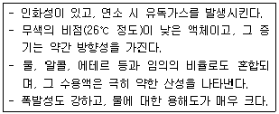
- 시안화수소(HCN)
- 아세트산(CH3COOH)
- 벤젠(C6H6)
- 염소(Cl2)
(정답률: 61%)
52. 집진효율이 98%인 집진시설에서 처리 후 배출되는 먼지농도가 0.3g/m3 일 때 유입된 먼지의 농도는 몇 g/m3인가?
- 10
- 15
- 20
- 25
(정답률: 61%)
53. 충전탑에 사용되는 충전물에 관한 설명으로 옳지 않은 것은?
- 가스와 액체가 전체에 균일하게 분포될 수 있도록 하여야 한다.
- 충전물의 단면적은 기액간의 충분한 접촉을 위해 작은 것이 바람직하다.
- 하단의 충전물이 상단의 충전물에 의해 눌려있으므로 이 하중을 견디는 내강성이 있어야 하며, 또한 충전물의 강도는 충전물의 형상에도 관련이 있다.
- 충분한 기계적 강도와 내식성이 요구되며 단위부피내의 표면적이 커야 한다.
(정답률: 66%)
54. 다음은 불소화합물 처리에 관한 설명이다. ( )안에 알맞은 화학식은?
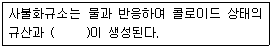
- CaF2
- NaHF2
- NaSiF6
- H2SiF6
(정답률: 65%)
55. 온도 25℃ 염산액적을 포함한 배출가스 1.5m3/s를 폭 9m, 높이 7m, 길이 10m의 침강집진기로 집진제거 하고자 한다. 염산비중이 1.6 이라면이 침강집진기가 집진할 수 있는 최소제거 입경(㎛)은? (단, 25℃에서의 공기점도 1.85×10-5 kg/m·s)
- 약 12
- 약 19
- 약 32
- 약 42
(정답률: 33%)
56. A공장의 연마시설에서 발생되는 배출가스의 먼지제거에 cyclone이 사용되고 있다. 유입폭이 40cm 이고, 유효회전수 5회, 입구유입속도 10m/s로 가동 중인 공정조건에서 10㎛ 먼지입자의 부분집진효율은 몇 % 인가? (단, 먼지의 밀도는 1.6g/cm3, 가스점도는 1.75×10-4g/cm·s, 가스밀도는 고려하지 않음)
- 약 40
- 약 45
- 약 50
- 약 55
(정답률: 20%)
57. 전기집진장치의 장애현상 중 먼지의 비저항이 비정상적으로 높아 2차 전류가 현저하게 떨어질 때의 대책으로 다음 중 가장 적합한 것은?
- baffle을 설치한다.
- 방전극을 교체한다.
- 스파크 횟수를 늘린다.
- 바나듐을 투입한다.
(정답률: 70%)
58. 다음 세정집진장치 중 입구유속(기본유속)이 가장 빠른 것은?
- Jet scrubber
- Venturi scrubber
- Theisen washer
- Cyclone scrubber
(정답률: 59%)
59. 다이옥신의 처리대책으로 가장 거리가 먼 것은?
- 촉매분해법 : 촉매로는 금속 산화물(V2O5, TiO2등), 귀금속(Pt, Pd)이 사용된다.
- 광분해법 : 자외선파장(250~340nm)이 가장 효과적인 것으로 알려져 있다.
- 열분해방법 : 산소가 아주 적은 환원성 분위기에서 탈염소화, 수소첨가반응 등에 의해 분해시킨다.
- 오존분해법 : 수중 분해시 순수의 경우는 선성일수록, 온도는 20℃ 전후에서 분해속도가 커지는 것으로 알려져 있다.
(정답률: 58%)
60. 유해가스를 처리하기 위해 흡착법에 사용되는 흡착제에 관한 설명으로 옳지 않은 것은?
- 활성탄이 가장 많이 사용되며, 주로 극성물질에 유효한 반면, 유기용제의 증기 제거기능은 낮다.
- 실리카겔은 250℃ 이하에서 물과 유기물을 잘 흡착한다.
- 활성알루미나는 물과 유기물을 잘 흡착하며 175~325℃로 가열하여 재생 시킬 수 있다.
- 합성제올라이트는 극성이 다른 물질이나 포화정도가 다른 탄화수소의 분리가 가능하다.
(정답률: 57%)
4과목: 대기오염 공정시험기준(방법)
61. 배출가스 중 납화합물의 자외선/가시선 분광법에 관한 설명이다. ( )안에 알맞은 것은?(관련 규정 개정전 문제로 여기서는 기존 정답인 1번을 누르면 정답 처리됩니다. 자세한 내용은 해설을 참고하세요.)
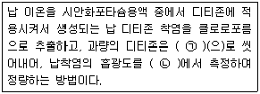
- ㉠ 시안화포타슘용액, ㉡ 520nm
- ㉠ 사염화탄소, ㉡ 520nm
- ㉠ 시안화포타슘용액, ㉡ 400nm
- ㉠ 사염화탄소, ㉡ 400nm
(정답률: 52%)
62. 원자흡수분광광도법에서 화학적 간섭을 방지하는 방법으로 가장 거리가 먼 것은?
- 이온교환에 의한 방해물질 제거
- 표준첨가법의 이용
- 미량의 간섭원소의 첨가
- 은폐제의 첨가
(정답률: 62%)
63. 굴뚝 배출가스 중 휘발성유기화합물을 테들러백(tedlar bag)을 이용하여 채취하고자 할 때 가장 거리가 먼 것은?
- 진공용기는 1~10L의 테들러 백을 담을 수 있어야 한다.
- 소각시설의 배출구같이 테들러 백내로 입자상물질의 유입이 우려되는 경우에는 여과재를 사용하여 입자상물질을 걸러주어야 한다.
- 테들러 백의 각 장치의 모든 연결부위는 유리재질의 관을 사용하여 연결하고, 밀봉윤활유 등을 사용하여 누출이 없도록 하여야 한다.
- 배출가스의 온도가 100℃미만으로 테들러백 내에 수분응축의 우려가 없는 경우 응축수트랩을 사용하지 않아도 무방하다.
(정답률: 50%)
64. 비분산 적외선 분석계의 구성에서 ( )안에 들어갈 명칭을 옳게 나열한 것은? (단, 복광속 분석계)
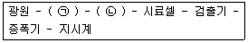
- ㉠ 광학섹터, ㉡ 회전필터
- ㉠ 회전섹터, ㉡ 광학필터
- ㉠ 광학필터, ㉡ 회전필터
- ㉠ 회전섹터, ㉡ 광학섹터
(정답률: 66%)
65. 대기오염공정시험기준에서 규정한 환경대기 중 금속분석을 위한 주 시험방법은?
- 원자흡수분광광도법
- 자외선/가시선 분광법
- 이온크로마토그래피
- 유도결합플라스마 원자발광분광법
(정답률: 53%)
66. 대기오염공정시험기준상 일반시험방법에 관한 설명으로 옳은 것은?
- 상온은 15~25℃, 실온은 1~35℃로 하고, 찬곳은 따로 규정이 없는 한 4℃이하의 곳을 뜻한다.
- 냉후(식힌 후)라 표시되어 있을 때는 보온 또는 가열 후 상온까지 냉각된 상태를 뜻한다.
- 시험은 따로 규정이 없는 한 상온에서 조작하고 조작 직 후 그 결과를 관찰한다.
- 냉수는 4℃이하, 온수는 50~60℃, 열수는 100℃를 말한다.
(정답률: 52%)
67. 굴뚝 배출가스 중 산소측정분석에 사용되는 화학분석법(오르자트분석법)에 관한 설명으로 옳지 않은 것은?(관련 규정 개정전 문제로 여기서는 기존 정답인 4번을 누르면 정답 처리됩니다. 자세한 내용은 해설을 참고하세요.)
- 각각의 흡수액을 사용하여 탄산가스, 산소의 순으로 흡수한다.
- 탄산가스의 흡수액에는 수산화포타슘의 용액을 사용한다.
- 산소 흡수액을 만들 때는 되도록 공기와의 접촉을 피한다.
- 산소 흡수액은 물과 수산화소듐을 녹인 용액에 피로가롤을 녹인 용액으로 한다.
(정답률: 57%)
68. 연료의 연소로부터 배출되는 굴뚝 배출가스 중 일산화탄소를 정전위전해법으로 분석하고자 할 때 주요 성능기준으로 옳지 않은 것은?(관련 규정 개정전 문제로 여기서는 기존 정답인 3번을 누르면 정답 처리됩니다. 자세한 내용은 해설을 참고하세요.)
- 90% 응답 시간은 2분 30초 이내이다.
- 재현성은 측정범위 최대 눈금값의 ±2% 이내이다.
- 적용범위는 최고 5%이다.
- 전압 변동에 대한 안정성은 최대 눈금값의 ±1% 이내이다.
(정답률: 67%)
69. 환경대기 중 가스상 물질의 시료채취방법에서 시료가스를 일정유량으로 통과시키는 것으로 채취관-여과재-채취부-흡입펌프-유량계(가스미터)의 순으로 시료를 채취하는 방법은?
- 용기채취법
- 용매채취법
- 직접채취법
- 포집여지에 의한 방법
(정답률: 55%)
70. 다음 중 다이에틸아민구리 용액에서 시료가스를 흡수시켜 생성된 다이에틸 다이싸이오카밤산구리의 흡광도를 435nm의 파장에서 측정하는 항목은?
- CS2
- H2S
- HCN
- PAH
(정답률: 60%)
71. 굴뚝 배출가스 중 황산화물의 시료채취 장치에 관한 설명으로 옳지 않은 것은?
- 가열부분에 있어서의 배관의 접속은 채취관과 같은 재질, 혹은 보통 고무관을 사용한다.
- 시료중의 황산화물과 수분이 응축되지 않도록 시료채취관과 콕 사이를 가열 할 수 있는 구조로 한다.
- 시료중에 먼지가 섞여 들어가는 것을 방지하기 위하여 채취관과 앞 끝에 알칼리(alkali)가 없는 유리솜 등 적당한 여과재를 넣는다.
- 시료채취관은 배출가스중의 황산화물에 의해 부식되지 않는 재질, 예를 들면 유리관, 석영관, 스테인리스강관 등을 사용한다.
(정답률: 64%)
72. 환경대기 중 석면농도를 측정하기 위해 위상차 현미경을 사용한 계수방법에 관한 설명 중 ( )안에 알맞은 것은?
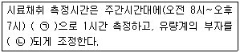
- ㉠ 1L/min, ㉡ 1L/min
- ㉠ 1L/min, ㉡ 10L/min
- ㉠ 10L/min, ㉡ 1L/min
- ㉠ 10L/min, ㉡ 10L/min
(정답률: 65%)
73. 고용량공기시료채취법을 사용하여 비산먼지를 측정하고자 한다. 풍속이 0.5m/s 미만 또는 10m/s 이상되는 시간이 전 채취시간의 50%미만일 때 풍속에 대한 보정계수는?
- 0.8
- 1.0
- 1.2
- 1.5
(정답률: 56%)
74. 기체크로마토그래피에서 정량분석방법과 가장 거리가 먼 것은?
- 넓이 백분율법
- 표준물첨가법
- 내부표준물질법
- 절대검정곡선법
(정답률: 45%)
75. 굴뚝 배출가스 중 먼지를 반자동식 측정방법으로 채취하고자 할 경우, 먼지시료채취 기록지 서식에 기재되어야 할 항목과 거리가 먼 것은?
- 배출가스 온도(℃)
- 오리피스압차(mmH2O)
- 여과지 표면적(cm2)
- 수분량(%)
(정답률: 58%)
76. 다음은 굴뚝 등에서 배출되는 질소산화물의 자동연속측정방법(자외선흡수분석계 사용)에 관한 설명이다. ( )안에 가장 적합한 물질은?
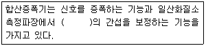
- 수분
- 아황산가스
- 이산화탄소
- 일산화탄소
(정답률: 48%)
77. 굴뚝배출가스 중 분석대상가스별 흡수액과의 연결로 옳지 않은 것은?(문제 오류로 실제 시험에서는 2, 3번이 정답 처리 되었습니다. 여기서는 2번을 누르면 정답 처리 됩니다.)
- 불소화합물 - 수산화소듐용액(0.1N)
- 황화수소 - 아세틸아세톤용액(0.2N)
- 벤젠 - 질산암모늄+황산(1(→)5)
- 브롬화합물 - 수산화소듐용액(질량분율 0.4%)
(정답률: 65%)
78. 염산(1+4)라고 되어 있을 때, 실제 조제할 경우 어떻게 계산하는가?
- 염산 1mL을 물 2mL에 혼합한다.
- 염산 1mL을 물 3mL에 혼합한다.
- 염산 1mL을 물 4mL에 혼합한다.
- 염산 1mL을 물 5mL에 혼합한다.
(정답률: 75%)
79. 기체크로마토그래피로 굴뚝 배출가스 중 일산화탄소를 분석 시 분석기기 및 기구 등의 사용에 관한 설명과 가장 거리가 먼 것은?
- 운반가스 : 부피분율 99.9% 이상의 헬륨
- 충전제 : 활성알루미나(Al2O3 93.1%, SiO2 0.02%)
- 검출기 : 메테인화 반응장치가 있는 불꽃이온화 검출기
- 분리관 : 내면을 잘 세척한 안지름 2~4mm, 길이 0.5~1.5m인 스테인리스강 재질관
(정답률: 45%)
80. 굴뚝배출가스 중 먼지 측정 시 등속흡인 정도를 보기 위하여 등속흡입계수(%)를 산정한다. 이 때 그 값이 몇 %범위 내에 들지 않는 경우 다시 시료를 채취하여야 하는가?(관련 규정 개정전 문제로 여기서는 기존 정답인 4번을 누르면 정답 처리됩니다. 자세한 내용은 해설을 참고하세요.)
- 90~1⑤%
- 90~110%
- 95~1⑤%
- 95~110%
(정답률: 67%)
5과목: 대기환경관계법규
81. 다음은 대기환경보전법규상 대기오염 경보단계별 오존의 해제(농도)기준이다. ( )안에 알맞은 것은?
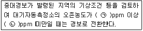
- ㉠ 0.3, ㉡ 0.5
- ㉠ 0.5, ㉡ 1.0
- ㉠ 1.0, ㉡ 1.2
- ㉠ 1.2, ㉡ 1.5
(정답률: 58%)
82. 대기환경보전법상 배출가스 전문정비사업자 지정을 받은 자가 고의로 정비 업무를 부실하게 하여 받은 업무정지명령을 위반한 자에 대한 벌칙 기준으로 옳은 것은?
- 7년 이하의 징역이나 1억원 이하의 벌금
- 5년 이하의 징역이나 3천만원 이하의 벌금
- 1년 이하의 징역이나 1천만원 이하의 벌금
- 300만원 이하의 벌금
(정답률: 44%)
83. 실내공기질 관리법규상 자일렌 항목의 신축공동주택의 실내공기질 권고기준은?
- 30㎍/m3 이하
- 210㎍/m3 이하
- 300㎍/m3 이하
- 700㎍/m3 이하
(정답률: 64%)
84. 대기환경보전법규상 위임업무의 보고횟수 기준이 '수시'에 해당되는 업무 내용은?
- 환경오염사고 발생 및 조치사항
- 자동차 연료 및 첨가제의 제조·판매 또는 사용에 대한 규제현황
- 첨가제의 제조기준 적합여부 검사현황
- 수입자동차 배출가스 인증 및 검사현황
(정답률: 67%)
85. 대기환경보전법규상 비산먼지 발생을 억제하기 위한 시설의 설치 및 필요한 조치에 관한 기준 중 야적(분체상 물질을 야적하는 경우에만 해당)에 관한 기준으로 옳지 않은 것은? (단, 예외사항은 제외)
- 야적물질을 1일 이상 보관하는 경우 방진덮개로 덮을 것
- 야적물질로 인한 비산먼지 발생억제를 위하여 물을 뿌리는 시설을 설치할 것(고철야적장과 수용성물질 등의 경우는 제외한다.)
- 야적물질의 최고저장높이의 1/3 이상의 방진벽을 설치할 것
- 야적물질의 최고저장높이의 1/3 이상의 방진망(막)을 설치할 것
(정답률: 54%)
86. 다음은 대기환경보전법규상 대기환경 규제지역의 지정대상지역기준이다. ( )안에 알맞은 것은?
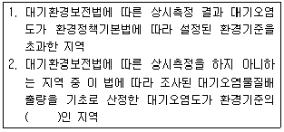
- 50퍼센트 이상
- 60퍼센트 이상
- 70퍼센트 이상
- 80퍼센트 이상
(정답률: 47%)
87. 대기환경보전법규상 운행차배출허용기준 중 일반기준으로 옳지 않은 것은?
- 알코올만 사용하는 자동차는 탄화수소 기준을 적용하지 아니한다.
- 휘발유와 가스를 같이 사용하는 자동차의 배출가스 측정 및 배출허용기준은 휘발유의 기준을 적용한다.
- 1993년 이후에 제작된 자동차 중 과급기(Turbo charger)나 중간냉각기(Intercooler)를 부착한 경유사용 자동차의 배출허용기준은 무부하급가속 검사방법의 매연 항목에 대한 배출허용기준에 5%를 더한 농도를 적용한다.
- 수입자동차는 최초등록일자를 제작일자로 본다.
(정답률: 61%)
88. 대기환경보전법상 저공해자동차로의 전환 또는 개조 명령, 배출가스저감장치의 부착·교체명령 또는 배출가스 관련 부품의 교체 명령, 저공해엔진(혼소엔진을 포함한다)으로의 개조 또는 교체 명령을 이행하지 아니한 자에 대한 과태료 부과기준은?
- 300만원 이하의 과태료
- 500만원 이하의 과태료
- 1천만원 이하의 과태료
- 2천만원 이하의 과태료
(정답률: 45%)
89. 대기환경보전법규상 특정대기유해물질이 아닌 것은?
- 니켈 및 그 화합물
- 이황화메틸
- 다이옥신
- 알루미늄 및 그 화합물
(정답률: 59%)
90. 실내공기질 관리법규상 실내주차장의 ㉠ PM10(㎍/m3), ㉡ CO(ppm) 실내공기질 유지기준으로 옳은 것은?
- ㉠ 100 이하 , ㉡ 10 이하
- ㉠ 150 이하 , ㉡ 20 이하
- ㉠ 200 이하 , ㉡ 25 이하
- ㉠ 300 이하 , ㉡ 40 이하
(정답률: 43%)
91. 대기환경보전법규상 한국자동차환경협회의 정관에 따른 업무와 거리가 먼 것은?
- 운행차 저공해와 기술개발
- 자동차 배출가스 저감사업의 지원
- 자동차관련 환경기술인의 교육훈련 및 취업지원
- 운행차 배출가스 검사와 정비기술의 연구·개발사업
(정답률: 59%)
92. 환경정책기본법령상 납(Pb)의 대기환경기준으로 옳은 것은?
- 연간평균치 0.5㎍/m3 이하
- 3개월 평균치 1.5㎍/m3 이하
- 24시간 평균치 1.5㎍/m3 이하
- 8시간 평균치 1.5㎍/m3 이하
(정답률: 55%)
93. 다음은 대기환경보전법령상 부과금의 징수유예·분할납부 및 징수절차에 관한 사항이다. ( )안에 알맞은 것은?
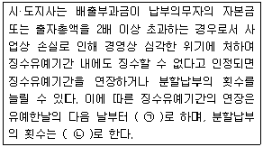
- ㉠ 2년 이내, ㉡ 12회 이내
- ㉠ 2년 이내, ㉡ 18회 이내
- ㉠ 3년 이내, ㉡ 12회 이내
- ㉠ 3년 이내, ㉡ 18회 이내
(정답률: 43%)
94. 대기환경보전법규상 대기오염도 검사기관과 거리가 먼 것은?
- 수도권대기환경청
- 환경보전협회
- 한국환경공단
- 낙동강유역환경청
(정답률: 67%)
95. 악취방지법규상 위임업무 보고사항 중 "악취검사기관의 지도·점검 및 행정처분 실적" 보고횟수기준은?
- 연 1회
- 연 2회
- 연 4회
- 수시
(정답률: 42%)
96. 대기환경보전법상 배출시설 설치허가를 받은 자가 대통령령으로 정하는 중요한 사항의 특정대기유해물질 배출시설을 증설하고자 하는 경우 배출시설 변경허가를 받아야 하는 시설의 규모기준은? (단, 배출시설의 규모의 합계나 누계는 배출구별로 산정)
- 배출시설 규모의 합계나 누계의 100분의 5 이상 증설
- 배출시설 규모의 합계나 누계의 100분의 10 이상 증설
- 배출시설 규모의 합계나 누계의 100분의 20 이상 증설
- 배출시설 규모의 합계나 누계의 100분의 30 이상 증설
(정답률: 59%)
97. 악취방지법규상 다음 지정악취물질의 배출허용기준으로 옳지 않은 것은?
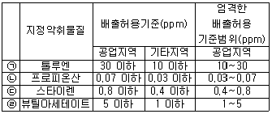
- ㉠
- ㉡
- ㉢
- ㉣
(정답률: 38%)
98. 대기환경보전법령상 과태료 부과기준 중 위반행위의 횟수에 따른 일반기준은 해당 위반행위가 있은 날 이전 최근 얼마간 같은 위반행위로 부과처분을 받은 경우에 적용하는가?
- 3월간
- 6월간
- 1년간
- 3년간
(정답률: 44%)
99. 악취방지법규에 의거 악취배출시설의 변경신고를 하여야 하는 경우로 가장 거리가 먼 것은?
- 악취배출시설을 폐쇄하는 경우
- 사업장 명칭을 변경하는 경우
- 환경담당자의 교육사항을 변경하는 경우
- 악취배출시설 또는 악취방지시설을 임대하는 경우
(정답률: 64%)
100. 대기환경보전법규 중 측정기기의 운영·관리 기준에서 굴뚝배출가스 온도 측정기를 새로 설치하거나 교체하는 경우에는 국가표준기본법에 따른 교정을 받아야 한다. 이 때 그 기록을 최소 몇 년 이상 보관하여야 하는가?
- 2년 이상
- 3년 이상
- 5년 이상
- 10년 이상
(정답률: 50%)